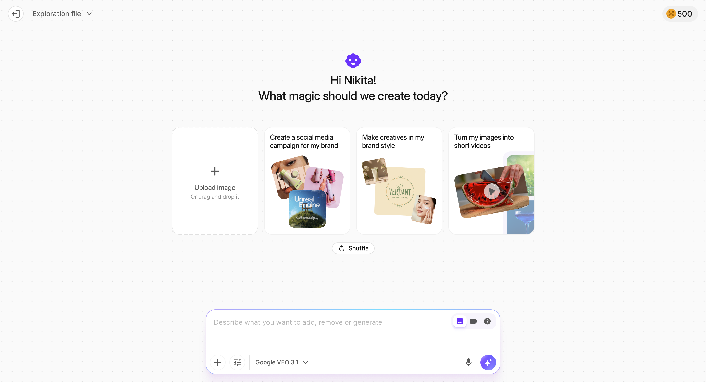
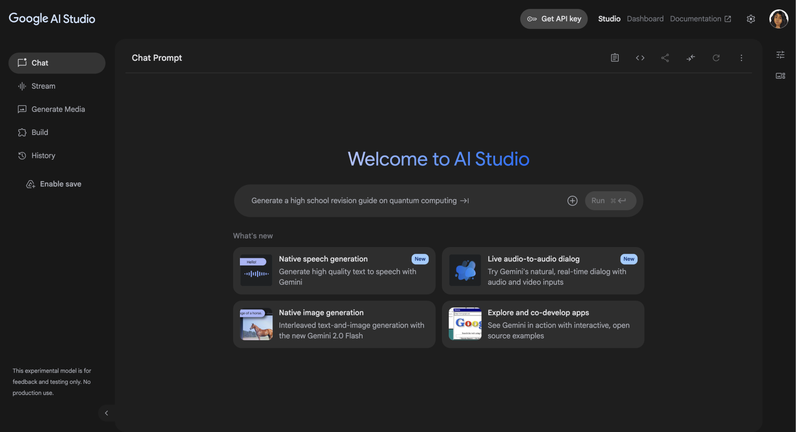
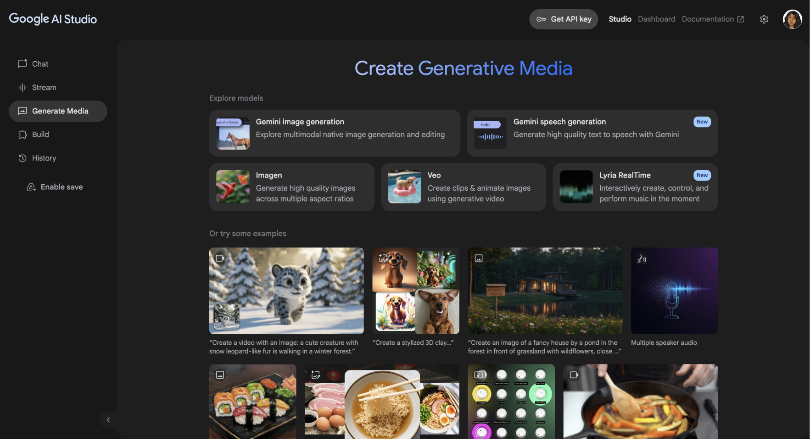
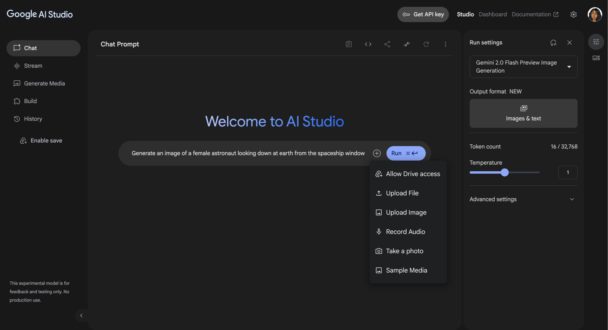
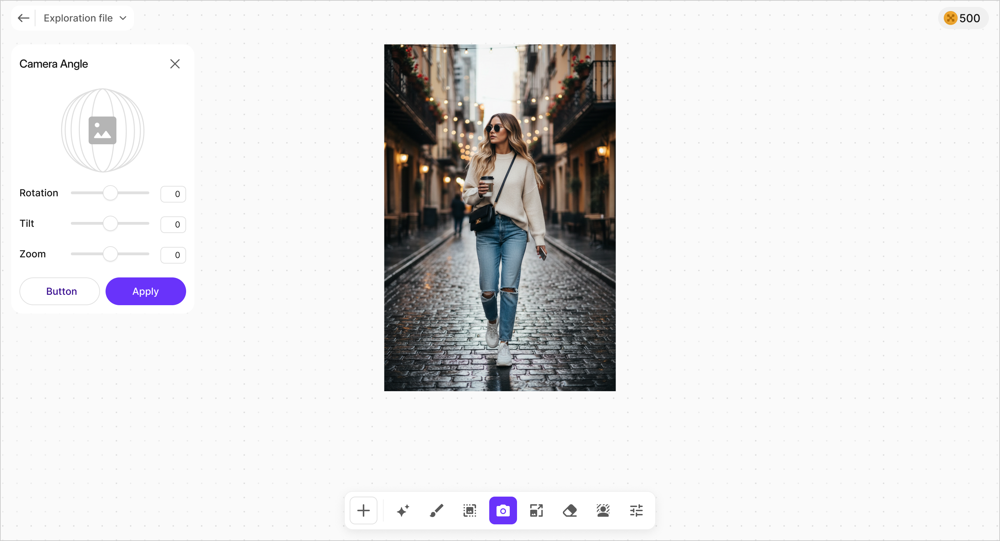
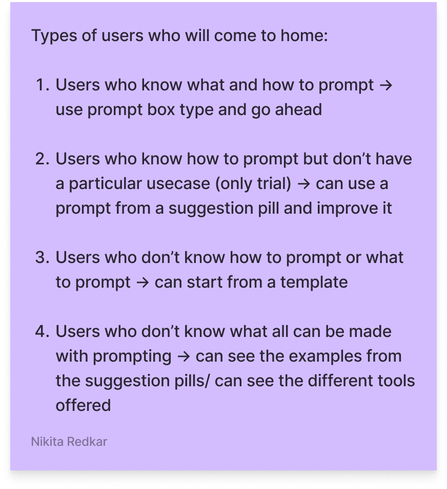
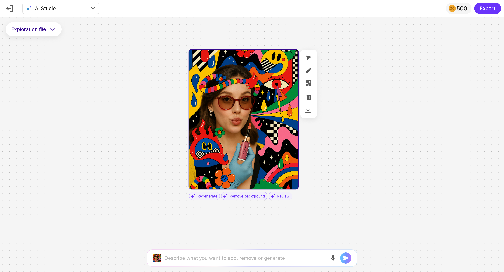
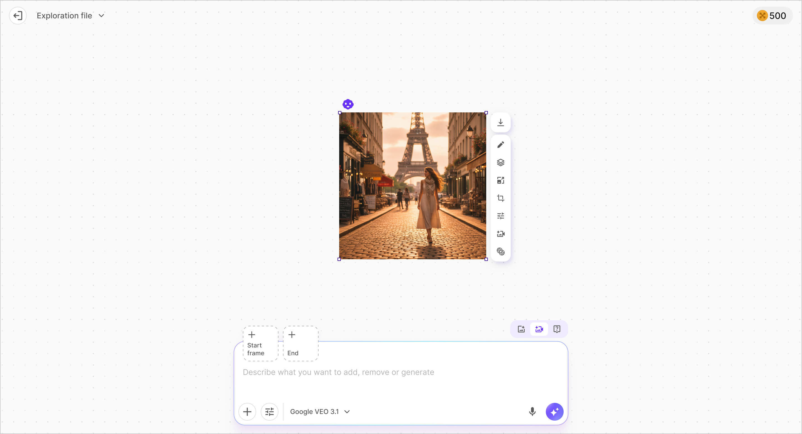
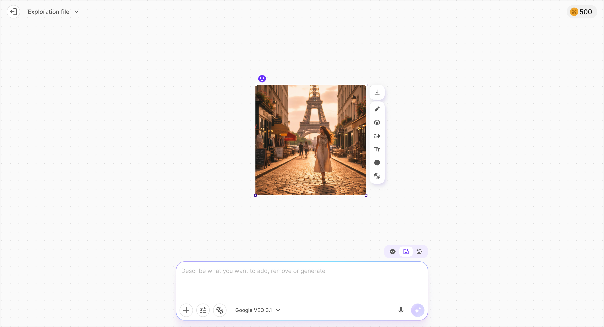

How should people
interact with AI?
What We Believed
The Feature
List
We believed the question was "which features should the editor have." Background removal. Upscaling. Watermark removal. Generation. The feature list felt like the product decision.
The feature list was identical across every competitor. The differentiation was not what the tool could do. It was how the user communicated with it.
We had to stop designing features and start choosing a worldview.
What Challenged That Belief
Three
Paradigms
Three fundamentally different interaction philosophies existed. Each assumed something different about the user. Each excluded someone. The design question was not "which paradigm is best" but "which assumption are you willing to make about your users — and which users are you willing to lose."
Canvas
RejectedThe Paradigm
The spatial approach — users place, arrange, and edit assets on an infinite canvas. We studied Flora Fauna, Remake, and Google Mixboard. Then we prototyped 170 frames of this paradigm ourselves.

Magic Canvas POC → Spatial workspace prototype
What the Research Revealed
Highly visual and tangible. Ideal for multi-asset campaigns — users could drag concepts around, compare variants side-by-side, and keep all assets in a single project. A board equals a campaign. Good mental model for e-commerce workflows.
But overwhelming for non-creatives. If someone just wants to remove a background and export in three sizes, the canvas feels like overkill. Performance-heavy on lower-end machines. And it conflicts with the wizard-style flows that SMB users prefer.
Verdict
Strong for professional creators who work with multiple assets spatially. Wrong for the majority of Pixelbin's users — people who want quick, guided results, not an infinite workspace.
Chat
RejectedThe Paradigm
The conversational approach — describe what you want in natural language and the AI creates it. We studied Google AI Studio, Wix AI Chat, Lumalabs, and Lovart.



Competitors studied → Chat-based editors
What the Research Revealed
Extremely low barrier to start. Minimal UI complexity — mostly input, result, refine. Mobile-friendly and easy to wrap into templated workflows. Fast experimentation for users who are good at prompting.
But prompt quality becomes a gatekeeper. Small business users struggle to describe what they want — "make it more premium but not too premium" is vague. Harder to control layout and micro details through text alone. Editing feels abstract. And learnability is fragile — changes in model behavior feel like the tool changed.
Verdict
Accessible for advanced users who think in language. Excluding for everyone who thinks in images. If you can't describe what you want, you can't get it.
Prompt
+ Tool
Selected
The Paradigm
The hybrid — a prompt bar for broad strokes, precision tools for fine control. We studied Krea, Runway ML, Playground, Pixelcut, and OpenArt. This was the paradigm we ultimately shipped.

PB 3.0 → Image Editor → Shipped production interface
What the Research Revealed
Best of both worlds — prompt for big moves, tools for precision. Gentle learning curve for users coming from existing image editors. Clear mapping between regions and prompts: select an area, describe the change, only that region updates. Supports both quick tasks and deep editing. Great fit for template-based use cases like AI Photoshoots and e-commerce banners.
But the warning was clear: UI complexity risk. Canvas plus toolbar plus layers plus prompt box plus model selector — it can get crowded. Users might not know when to use AI versus manual controls. Performance and state management complexity across undo, redo, and large images. This warning would prove prophetic — 103 usability issues later.
Verdict
The strongest candidate. Selected for production. But only because the team was willing to fight the complexity warning through 103 rounds of QA and iteration.
Three paradigms.
Four user types.
One decision.
What We Discovered
Four User
Types
We mapped four user types by their relationship to prompting — not by demographics, not by industry. By how they relate to the act of telling an AI what to do. The taxonomy emerged from 4 user interviews, competitor research across 9 products, and analysis of Pixelbin's existing usage patterns — not from a formal survey, but from pattern recognition across qualitative data.
- 01Users who know what they want and how to prompt for it
- 02Users who know how to prompt but don't have a use case
- 03Users who don't know how to prompt
- 04Users who don't know what AI can make

PB Research 3.0 → User type taxonomy
No single paradigm serves all four. The question was not "which paradigm is best." It was "which assumption are you willing to make about your users."
The Commitment
170
Frames
We committed 170 prototype frames to the Canvas paradigm. Built it. Lived in it. 13 complete user journeys. A complete AI assistant named Pixie. The goal was not to explore — it was to understand deeply enough to decide.
They designed the complete creative workflow.

Magic Canvas POC → Image generation
They designed the AI assistant interaction.
Magic Canvas POC → Pixie AI assistant
They designed for multiple content types.

Magic Canvas POC → Multi-content editing
The Decision
Two
Paradigms
Canvas was rejected for the consumer product. Chat was rejected. The Prompt + Tool hybrid was selected for production.
But the Canvas paradigm didn't die. It became the power-user vision. Two paradigms serving two audiences, informed by a deliberate study of three. And then we chose a different one for production.
The decision was not to abandon the Canvas paradigm. It was to assign each to the audience it serves best.

Canvas
For professional creators
Prompt + Tool
For everyone
Design Principle
Every AI interface is a bet on
how your users think.
Make the bet deliberately.